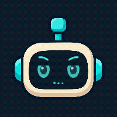
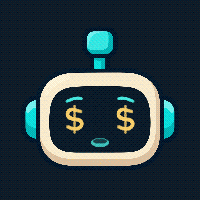
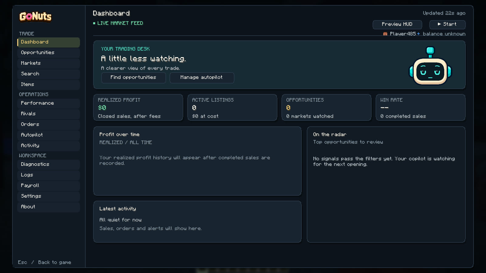
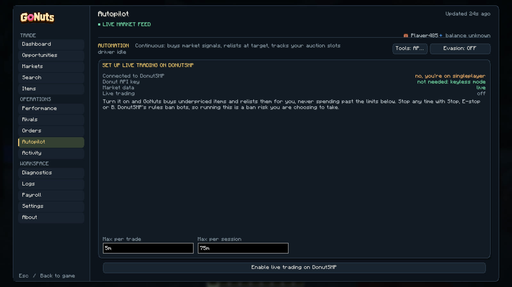

- Fetching the changelog from GitHub.
No API key
DonutSMP switched off its public API. GoNuts reads the market from what the game shows: order house fills, live auction prices, and your own sales.
A Fabric mod that reads the market, places buy orders, and lists what it buys. It stays inside the limits you set, and it is off until you turn it on.


Watch it through, or pick a step to jump the video to it.
After that, leave the game window open and visible with no menu left open. The End key stops it at once.
A bot inside the mod posts one message in a channel of yours and keeps it up to date. You start, stop and tune the trader from the buttons under it. New to Discord bots? Watch it through: every click is spelled out.
The bot token is a password. Never post it or share it. If it gets out, press Reset Token on the developer page and paste the new one into GoNuts.
DonutSMP switched off its public API. GoNuts reads the market from what the game shows: order house fills, live auction prices, and your own sales.
It places buy orders in the order house, collects what fills, and lists it on the auction house. It also buys underpriced listings and relists them.
A cap per trade and per session, a dry run mode, and an emergency stop. When something does not match, it stops instead of guessing.
Follow other players and see what they order and list, which markets they work, and who pays whom among them.
One live panel in a channel of yours shows what the bot is doing, with buttons to start, stop and tune it.
It tells you when a new build is out and what it changes. Turn on auto-update and it installs when you close the game.
Press B in game. Opportunities, live markets, the order house, rivals, performance and every setting are in one place.


The same notes the mod shows in its update notice, in your local time.
DonutSMP's rules ban scripts, macros and auto-clickers, and enforcement can reach every account linked to a player. Running live trading is a ban risk that you, the account owner, choose to take.
Watching prices and reading the screens carry no such risk; live trading does. GoNuts is an independent project, not affiliated with or endorsed by DonutSMP.